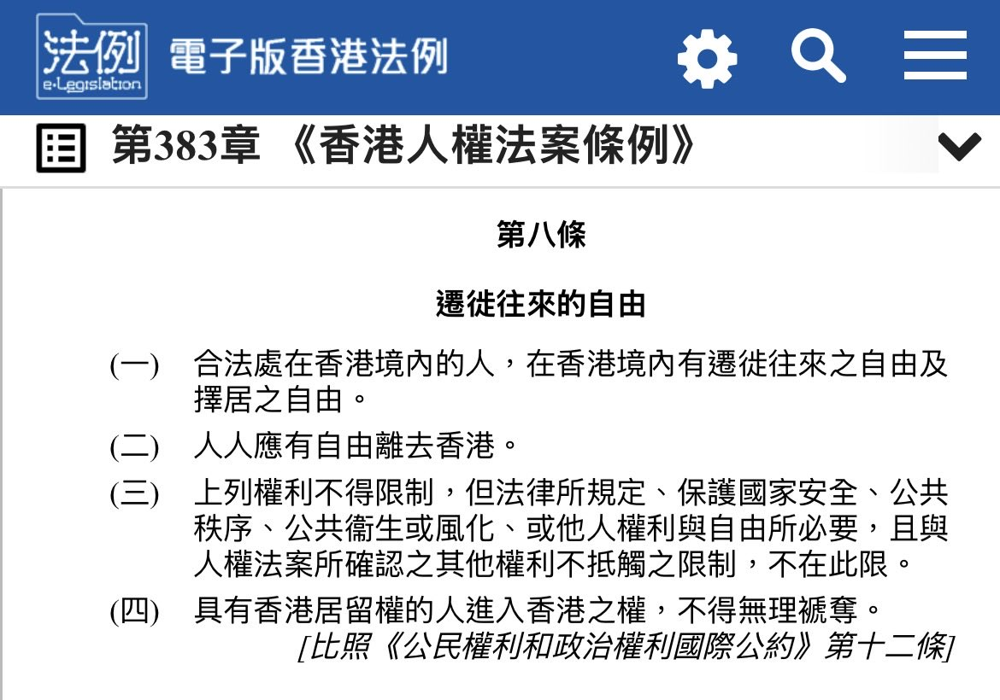

RedFox（2代目）🏳️⚧️
@FoxRed695449
@WHOGIVESAs1ht 理论上的人权并不是护照而是出入境的自由
虽然老中没有法律保护这个人权但至少回归的香港还是写在法律上保护的
当然世界上所有国家都会有不同程度的限制这个人权就是了

素里肥汉
@WHOGIVESAs1ht
普及冷知识 - 护照并不是基本人权，美加公民在特定状况下也无法申办护照。包括但并不限于：州/联邦刑事案件有court order，欠大额联邦债务，欠child support，有可能损害国家安全和有恐怖主义威胁的人，都不能办理护照 https://t.co/n2giKnNsth